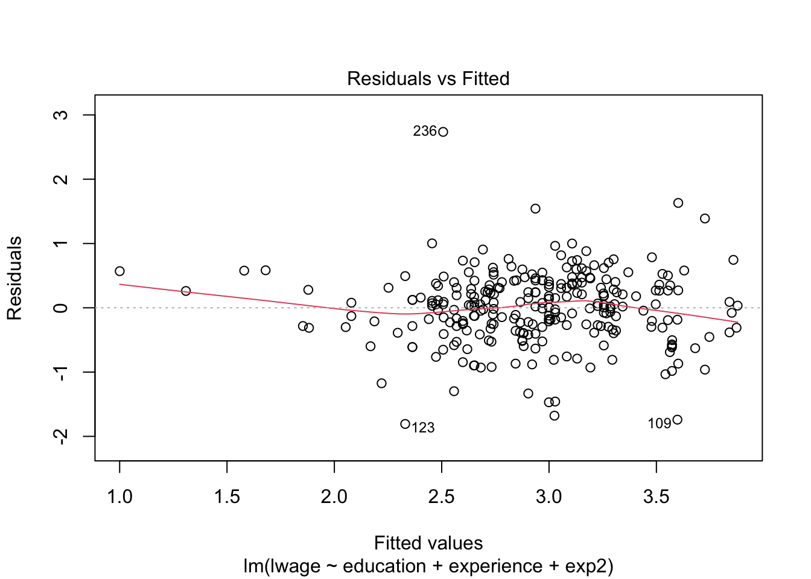
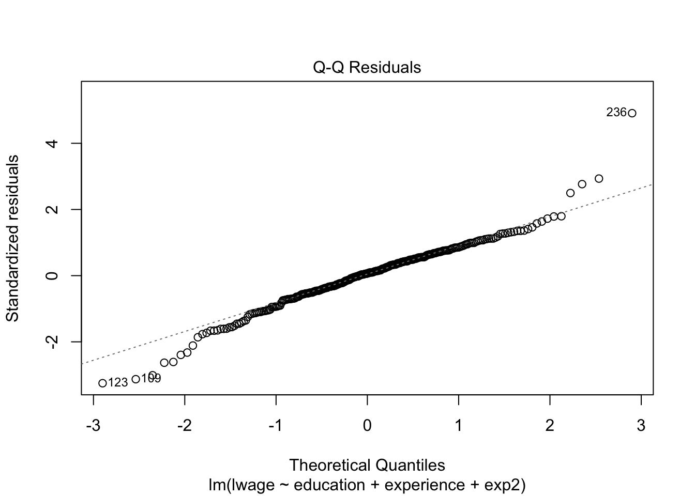

library(readxl)
cps_data <- read_excel("data/cps09mar.xlsx")
cps_data## # A tibble: 50,742 × 12
## age female hisp education earnings hours week union uncov region race
## <dbl> <dbl> <dbl> <dbl> <dbl> <dbl> <dbl> <dbl> <dbl> <dbl> <dbl>
## 1 52 0 0 12 146000 45 52 0 0 1 1
## 2 38 0 0 18 50000 45 52 0 0 1 1
## 3 38 0 0 14 32000 40 51 0 0 1 1
## 4 41 1 0 13 47000 40 52 0 0 1 1
## 5 42 0 0 13 161525 50 52 1 0 1 1
## 6 66 1 0 13 33000 40 52 0 0 1 1
## 7 51 0 0 16 37000 44 52 0 0 1 1
## 8 49 1 0 16 37000 44 52 0 0 1 1
## 9 33 0 0 16 80000 40 52 0 0 1 1
## 10 52 1 0 14 32000 40 52 0 0 1 1
## marital
## <dbl>
## 1 1
## 2 1
## 3 1
## 4 1
## 5 1
## 6 5
## 7 1
## 8 1
## 9 1
## 10 1
## # ℹ 50,732 more rowsDefine two variables: experience and its square (we divide by 100 to simplify reporting). Experience is defined as potential labor market experience: \[ \begin{aligned} \text{experience} &= \text{age}-\text{education}-6 \\ \text{exp2} &= \text{experience}^2/100 \end{aligned} \]
cps_data <- cps_data %>%
mutate(experience = age-education-6,
exp2=experience^2/100)
colnames(cps_data)## [1] "age" "female" "hisp" "education" "earnings"
## [6] "hours" "week" "union" "uncov" "region"
## [11] "race" "marital" "experience" "exp2"Calculate a new column for hourly wage using the following equation, and call it wage, then take the logarithm of it and call it lwage.
\[
\begin{aligned}
\text{wage} &= \frac{\text{earnings}}{\text{hours}\times\text{week}} \\
\text{lwage} &= \log (\text{wage})
\end{aligned}
\]
cps_data <- cps_data %>%
mutate(wage = earnings/(hours*week),
lwage = log(wage))
cps_data## # A tibble: 50,742 × 16
## age female hisp education earnings hours week union uncov region race
## <dbl> <dbl> <dbl> <dbl> <dbl> <dbl> <dbl> <dbl> <dbl> <dbl> <dbl>
## 1 52 0 0 12 146000 45 52 0 0 1 1
## 2 38 0 0 18 50000 45 52 0 0 1 1
## 3 38 0 0 14 32000 40 51 0 0 1 1
## 4 41 1 0 13 47000 40 52 0 0 1 1
## 5 42 0 0 13 161525 50 52 1 0 1 1
## 6 66 1 0 13 33000 40 52 0 0 1 1
## 7 51 0 0 16 37000 44 52 0 0 1 1
## 8 49 1 0 16 37000 44 52 0 0 1 1
## 9 33 0 0 16 80000 40 52 0 0 1 1
## 10 52 1 0 14 32000 40 52 0 0 1 1
## marital experience exp2 wage lwage
## <dbl> <dbl> <dbl> <dbl> <dbl>
## 1 1 34 11.56 62.39316 4.133456
## 2 1 14 1.96 21.36752 3.061872
## 3 1 18 3.24 15.68627 2.752786
## 4 1 22 4.84 22.59615 3.117780
## 5 1 23 5.29 62.125 4.129148
## 6 5 47 22.09 15.86538 2.764140
## 7 1 29 8.41 16.17133 2.783240
## 8 1 27 7.29 16.17133 2.783240
## 9 1 11 1.21 38.46154 3.649659
## 10 1 32 10.24 15.38462 2.733368
## # ℹ 50,732 more rowsFor this illustration, we use the sub-sample of married (spouse present) black female wage earners with 12 years potential work experience. This sub-sample has 20 observations.
sample1 <- cps_data %>%
filter(marital<3 & race==2 & female==1 & experience==12)
sample1## # A tibble: 20 × 16
## age female hisp education earnings hours week union uncov region race
## <dbl> <dbl> <dbl> <dbl> <dbl> <dbl> <dbl> <dbl> <dbl> <dbl> <dbl>
## 1 36 1 0 18 71000 36 52 0 0 1 2
## 2 36 1 0 18 85000 40 52 0 0 1 2
## 3 31 1 1 13 29500 40 52 0 0 1 2
## 4 34 1 0 16 35000 40 52 0 0 1 2
## 5 34 1 0 16 69000 40 52 0 0 2 2
## 6 36 1 0 18 62000 40 52 0 0 3 2
## 7 34 1 0 16 127800 45 52 0 0 3 2
## 8 36 1 0 18 112000 50 52 0 0 3 2
## 9 30 1 0 12 30000 40 52 0 0 3 2
## 10 34 1 0 16 31000 40 52 0 0 3 2
## 11 36 1 0 18 45000 40 52 0 0 3 2
## 12 34 1 0 16 30000 52 52 0 0 3 2
## 13 31 1 0 13 20800 40 52 0 0 3 2
## 14 32 1 0 14 66000 40 52 0 0 3 2
## 15 30 1 0 12 23000 40 52 0 0 3 2
## 16 34 1 0 16 39000 40 52 0 0 3 2
## 17 32 1 0 14 64000 45 52 0 0 3 2
## 18 34 1 0 16 50000 40 52 0 0 3 2
## 19 36 1 0 18 75000 40 52 0 0 4 2
## 20 34 1 0 16 48000 40 52 0 0 4 2
## marital experience exp2 wage lwage
## <dbl> <dbl> <dbl> <dbl> <dbl>
## 1 1 12 1.44 37.92735 3.635672
## 2 1 12 1.44 40.86538 3.710283
## 3 1 12 1.44 14.18269 2.652022
## 4 1 12 1.44 16.82692 2.822980
## 5 1 12 1.44 33.17308 3.501739
## 6 1 12 1.44 29.80769 3.394766
## 7 1 12 1.44 54.61538 4.000316
## 8 1 12 1.44 43.07692 3.762987
## 9 1 12 1.44 14.42308 2.668829
## 10 1 12 1.44 14.90385 2.701619
## 11 1 12 1.44 21.63462 3.074295
## 12 1 12 1.44 11.09467 2.406465
## 13 1 12 1.44 10 2.302585
## 14 1 12 1.44 31.73077 3.457287
## 15 1 12 1.44 11.05769 2.403126
## 16 1 12 1.44 18.75 2.931194
## 17 1 12 1.44 27.35043 3.308732
## 18 1 12 1.44 24.03846 3.179655
## 19 1 12 1.44 36.05769 3.585120
## 20 1 12 1.44 23.07692 3.138833Now we want to estimate the following simple regression model: \[ \log (\text{Wage}) = \beta_1 + \beta_2\; \text{education} + \varepsilon \]
Manually calculated OLS using algebraic operations.
%*%solve(A)solve(A)%*%B or solve(A, B).y <- as.matrix(sample1$lwage)
x <- cbind(1, sample1[,"education"]) %>% as.matrix()
n <- length(y)
K <- ncol(x)
xx <- t(x) %*% x
xy <- t(x) %*% y
beta <- solve(xx,xy)
beta## [,1]
## 1 0.6978150
## education 0.1550389Variance matrix, \(V_{\hat{\beta}}\)
e <- y-x%*%beta
sigma_hat <- sum(e^2)/(n-K)
v0 <- sigma_hat * solve(xx)
s0 <- diag(v0) %>% sqrt()
s0## 1 education
## 0.70665339 0.04464806We can write the estimated equation as: \[ \widehat{\log \text{(Wage)}} = 0.698 + 0.155\; \text{education} . \]
Compare your estimate with the output from lm function.
lm_model1 <- lm(lwage~education, data=sample1)
summary(lm_model1)##
## Call:
## lm(formula = lwage ~ education, data = sample1)
##
## Residuals:
## Min 1Q Median 3Q Max
## -0.77197 -0.27430 -0.01919 0.23494 0.82188
##
## Coefficients:
## Estimate Std. Error t value Pr(>|t|)
## (Intercept) 0.69782 0.70665 0.987 0.33649
## education 0.15504 0.04465 3.472 0.00272 **
## ---
## Signif. codes: 0 '***' 0.001 '**' 0.01 '*' 0.05 '.' 0.1 ' ' 1
##
## Residual standard error: 0.3998 on 18 degrees of freedom
## Multiple R-squared: 0.4012, Adjusted R-squared: 0.3679
## F-statistic: 12.06 on 1 and 18 DF, p-value: 0.002718Now let’s carry out a multivariate regression model by introducing two additional regressors: experience and its square (\(\text{experience}^2/100\), we divide by 100 to simplify reporting).
This time, we use the sub-sample of single (never married) Asian men, which has 268 observations.
sample2 <- cps_data %>% filter(race==4 & marital==7 & female==0)
sample2## # A tibble: 268 × 16
## age female hisp education earnings hours week union uncov region race
## <dbl> <dbl> <dbl> <dbl> <dbl> <dbl> <dbl> <dbl> <dbl> <dbl> <dbl>
## 1 21 0 0 13 11960 36 52 0 0 1 4
## 2 38 0 0 18 125000 50 52 0 0 1 4
## 3 25 0 0 14 35000 40 52 0 0 1 4
## 4 55 0 0 20 110000 60 52 0 0 1 4
## 5 27 0 1 18 52000 40 48 0 0 1 4
## 6 27 0 0 12 26000 40 52 0 0 1 4
## 7 37 0 0 16 40000 40 52 0 0 1 4
## 8 22 0 0 14 12000 40 52 0 0 1 4
## 9 25 0 0 16 40000 40 52 0 0 1 4
## 10 24 0 0 16 40000 40 52 0 0 1 4
## marital experience exp2 wage lwage
## <dbl> <dbl> <dbl> <dbl> <dbl>
## 1 7 2 0.04 6.388889 1.854560
## 2 7 14 1.96 48.07692 3.872802
## 3 7 5 0.25 16.82692 2.822980
## 4 7 29 8.41 35.25641 3.562647
## 5 7 3 0.09 27.08333 3.298919
## 6 7 9 0.81 12.5 2.525729
## 7 7 15 2.25 19.23077 2.956512
## 8 7 2 0.04 5.769231 1.752539
## 9 7 3 0.09 19.23077 2.956512
## 10 7 2 0.04 19.23077 2.956512
## # ℹ 258 more rowslm_model2 <- lm(lwage~education+experience+exp2, data=sample2)
summary(lm_model2)##
## Call:
## lm(formula = lwage ~ education + experience + exp2, data = sample2)
##
## Residuals:
## Min 1Q Median 3Q Max
## -1.80706 -0.29973 0.03816 0.35345 2.73619
##
## Coefficients:
## Estimate Std. Error t value Pr(>|t|)
## (Intercept) 0.57536 0.18683 3.080 0.00229 **
## education 0.14332 0.01163 12.322 < 2e-16 ***
## experience 0.03558 0.01086 3.277 0.00119 **
## exp2 -0.07138 0.02957 -2.414 0.01647 *
## ---
## Signif. codes: 0 '***' 0.001 '**' 0.01 '*' 0.05 '.' 0.1 ' ' 1
##
## Residual standard error: 0.5608 on 264 degrees of freedom
## Multiple R-squared: 0.3876, Adjusted R-squared: 0.3806
## F-statistic: 55.69 on 3 and 264 DF, p-value: < 2.2e-16We obtain the estimates: \[ \widehat{\log \text{(Wage)}} = 0.575 + 0.143\; \text{education} + 0.036 \; \text{experience} - 0.071 \; \text{experience}^2/100. \]
\[ \sum_{i=1}^n e_i \]
e <- lm_model2$residuals
sum(e)## [1] 7.931156e-15Let \(x_{2i}\) be education and \(x_{3i}\) be experience, calculate \[ \begin{aligned} &\sum_{i=1}^n x_{2i}\, e_i \\ &\sum_{i=1}^n x_{3i}\, e_i \quad \text{, and} \quad \\ &\sum_{i=1}^n x_{3i}^2\, e_i \end{aligned} \]
sum(sample2$education * e)## [1] 8.256312e-13sum(sample2$experience * e)## [1] -1.30812e-13sum(sample2$exp2 * e)## [1] -2.919019e-14Calculate \[ \sum_{i=1}^n \hat{y}_i \,e_i \]
sum(lm_model2$fitted.values * e)## [1] 7.457576e-15Visualize residuals.
plot(lm_model2, which=1)
plot(lm_model2, which=2)